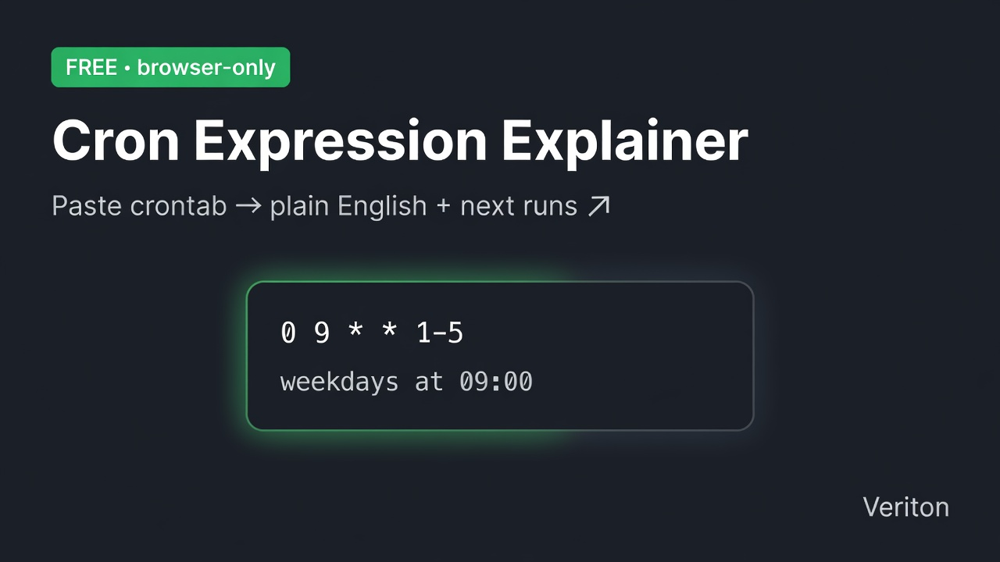

← Veriton Micro-Dev · free tool · Diff Risk · HTML→JSON · JSON→Schema
Paste a classic 5-field crontab (min hour dom mon dow). Get plain English, field breakdown, and the next run times. Runs entirely in your browser — nothing is uploaded. Handy for CI schedules, agent wake loops, and ops checklists.

Need a repo + CI schedule scaffold? $3 → Diff Risk → Offer page →
Supports *, */n, lists (1,4), ranges (1-5), and steps on ranges (1-10/2). No seconds field; no L/W/# extensions.
# Cron explain report
Local decoder for standard 5-field cron used by crontab, many CI systems, and agent schedulers. It does not execute jobs, talk to a server, or guarantee platform-specific quirks (some runners treat Sunday as 0 or 7; some reject both). Day-of-month and day-of-week both set ⇒ match either (classic cron OR semantics). For a full CI scaffold + README + deploy checklist, use the $3 Repo Bootstrap.